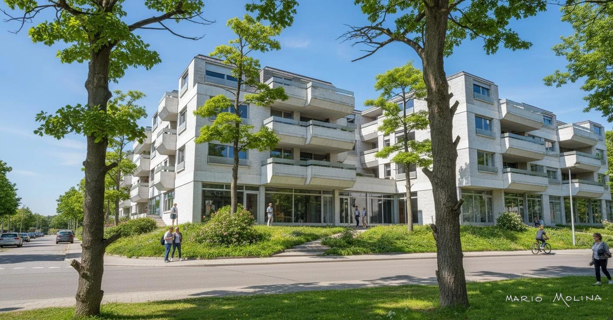

Mario Molina
Constructor Civil | Diseñador AEC
Gestor Digital BIM, CAD, CAE, GIS y Diseño Web 3D/360°
🌐 mariomolinacc.github.io
Sobre Mí
Perfil Profesional
Soy Constructor Civil y Diseñador AEC con integración BIM, CAD, CAE, GIS y Geomática, para la optimización de proyectos de edificación. Incluye el desarrollo web de presentaciones visuales interactivas en 3D/360° y la restauración digital del patrimonio arquitectónico e histórico (HBIM).
Profesional con más de 35 años de experiencia en proyectos de ingeniería y construcción, diseño y representaciones visuales. Especialista en la transición tecnológica desde el dibujo tradicional hacia CAD, BIM e inteligencia artificial.
Ofrece servicios de comunicación de proyectos mediante tecnologías 3D y plataformas web, además de la recuperación, restauración y digitalización de documentación histórica técnica para arquitectos, ingenieros y empresas del sector.
Experiencia ampliadaMis Proyectos

🏛️ Edificio multifamiliar y comercial - Punta del Este

🏛️ Proyecto Casa Dufaur, San Isidro (BA)

🏛️ Proyecto Casa Ayacucho, San Isidro (BA)
Visualización 3D

Dibujo en Lápiz

Render de Día

Render de Noche
Mis Servicios
1. Diseño y Desarrollo Web para Comunicación de Proyectos
Ayudo a arquitectos, ingenieros, desarrolladores, empresas e inversores a comunicar proyectos de manera clara, interactiva y profesional mediante tecnologías BIM, visualización 3D y plataformas web.
2. Rescate Digital de Patrimonio Profesional
Servicio especializado en la recuperación, restauración y puesta en valor de documentación histórica desarrollada en soporte papel antes de la era digital. Orientado a profesionales y entidades que desean preservar y difundir décadas de trabajo técnico y proyectual.